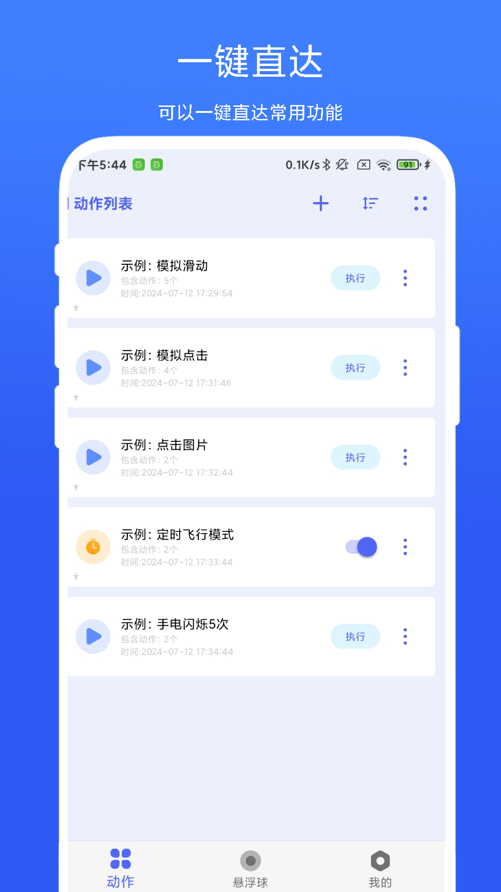
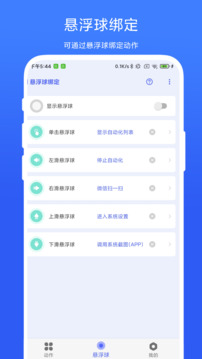
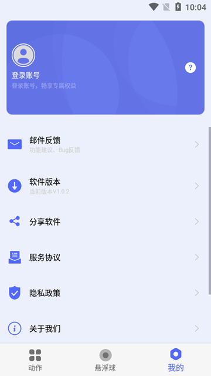
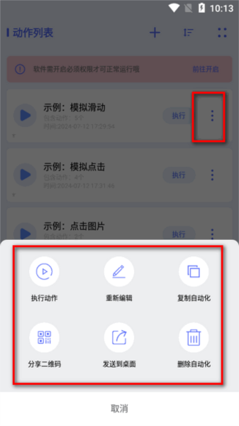

你以为 AutoAgent 只是定时闹钟？我翻出了 5 个藏得真深的玩法
一条流程挂多个触发条件、剪贴板监测、悬浮球四向手势……这些功能藏在菜单边角，官方几乎不宣传，但用起来是真的爽。
用了 autoagent官网 快半年了，当初就是从官方下载拿的安装包。一开始跟所有人一样——拿它当个高级定时闹钟，设几个"早上七点半查路况""晚上十一点清垃圾"就完事。直到某次蹲坑无聊点来点去，才发现这货藏了好几个autoagent文档里都没大篇幅讲的冷门功能。今天把这些压箱底的掏出来，看看你中了几个。

隐藏功能一：一条流程挂多个扳机——哪个先响都能跑
这是我挖到最惊喜的一个。大多数人以为"一条自动化流程只能有一个触发条件"——定时的就定时，手动的就手动，井水不犯河水。错了。
进主界面，找一条已有的流程点右侧的"⋯"三个点，选编辑，然后在触发条件那块儿继续添加就行。我现在通勤那条流程同时挂了三个扳机：工作日 07:30 定时触发、手动触发、悬浮球左侧手势触发。早上闹钟没响我可以手动点一下，地铁上想临时查也能用悬浮球挥一下，到点了自动跑。三个入口互不干扰，哪个先响都能把动作列表跑一遍。
在哪开的？编辑界面 → 触发条件区域 → 点「＋」继续加。藏得真深，第一次发现的时候愣了好一会儿——这不就是给重度用户留的后门吗？
什么人用得上？每天同一件事需要不同场景触发的人。比如"查快递物流"，既想让通知栏关键词自动触发，又想自己想查的时候手动点一下。单个触发条件总觉得不够灵活，多个扳机一挂就通了。什么人可以无视？只用定时、对多入口没需求的轻量用户——老老实实设定时就挺好。
隐藏功能二：复制一条改改就是新流程——别再从头搭了
你有没有过这种时刻：搭好了一条"工作日 07:30 查路况"的流程，想搞一条"周末 09:00 查路况"的，于是又从头拖了一遍动作列表？我以前也这么干，直到发现复制按钮。
还是那三个点菜单，复制就在编辑隔壁。点一下，一条一模一样的流程就出来了——改个名字、改个时间，完事。我现在的通勤全家桶就是：先搭好工作日版本，复制一份改时间变周末版，再复制一份改成"节假日在家查路况"。三条流程，十分钟搞定。
它还不止于改时间。复制完了想换个触发方式？进去编辑把定时触发换成文字触发就行——比如"收到打车通知自动提醒出门"，从手动版复制一份改触发条件就是文字版。复制 + 编辑这个组合拳，比一条条从零搭快十倍。

隐藏功能三：文字触发的监测来源不止通知栏——还有剪贴板
说到文字触发，大家第一反应都是"监测通知栏里的关键词"——快递、打车、外卖通知来了自动接后续。但你点进触发条件里的监测来源下拉看看，还有一个选项叫剪贴板。
把关键词设成 http 或 https，监测来源选剪贴板，动作列表里加一条"打开浏览器"——好了，以后你复制任何链接，AutoAgent 会自动帮你打开。这个场景偏门是偏门，但我用它来处理每天从各种群里复制的文章链接，省了不知道多少事。
要注意两点：剪贴板监测是耗电的——毕竟要后台轮询剪贴板内容，别没事儿给所有流程都开上。还有就是部分国产安卓对剪贴板权限卡得紧，小米 OPPO 华为可能需要单独去系统设置里授权，否则你复制半天没反应。
隐藏功能四：悬浮球四向手势——把高频操作绑在手指尖
很多人不知道悬浮球可以不只是一个按钮。进设置里找悬浮球快捷手势，它能绑四个方向的滑动：左、右、上、下，每个方向各绑一条流程。
我现在的工作场景悬浮球分配是这样的：左滑开 Wi-Fi、右滑关 Wi-Fi、上滑开热点、下滑停止当前流程。人在任何应用里都能触发——刷着抖音想开关 Wi-Fi？不用切桌面找设置，手指在悬浮球上滑一下就行。地铁上关 Wi-Fi、到公司开 Wi-Fi，一天不知道要滑多少次，省下来的操作步骤是真的看得见。
什么人用得上？需要频繁在不同应用里触发自动化的人——四向手势相当于四个"无处不在的快捷键"。什么人可以无视？从来都是定时跑流程、从不手动触发的人——悬浮球开着也是浪费屏幕空间，直接关掉更清爽。

隐藏功能五：动作列表可以设置循环执行
编辑流程的时候，动作列表每一条右侧有个小开关叫循环执行。默认是关的——动作列表按顺序跑一遍就完了。打开之后，这条动作会循环跑 N 次，或者一直循环到你手动停止。
这个功能我用在定时提醒喝水上：设了一条每小时弹通知提醒喝水的流程，动作列表里"弹出通知"开了循环 8 次——意思是到点了如果我没点掉，它会每隔 30 秒再弹一次，直到我喝为止。听起来有点烦，但对于坐办公室忘了喝水的人来说，这比一次提醒管用多了。
还有个进阶玩法：把循环和停止流程绑在一起——循环动作跑起来，点悬浮球下滑（我绑的是停止）就能立刻打断。想停就停，不想停就一直循环，自由度很高。
一个必须踩的坑：自启动和电池策略没设好，第二天就哑了
这个不算隐藏功能，但绝对是新手最容易踩的暗坑——我装完 AutoAgent 的第一天，所有流程跑的好好的，第二天起来一看全挂了。排查了半小时才发现，是自启动权限和电池优化没设。
国产安卓对后台应用的态度，用过的人都懂——小米叫"自启动"、OPPO 叫"应用冻结管理"、华为叫"启动管理"，每家名字不一样，意思都是别让系统把 AutoAgent 杀掉。三项必须做：自启动权限开了、电池优化设为"不优化"、最近任务界面下拉锁定卡片——锁定之后一键清理后台不会把它干掉。缺任何一项，大概率就是"装完当天能跑，第二天醒了全哑"。

最后说句实在的
AutoAgent 不是那种靠一个"杀手级功能"吃饭的工具——它厉害的地方在于每个入口都不浪费：手动触发、定时触发、文字触发、悬浮球手势，四个入口覆盖了"我想现在跑""到点自己跑""某个事件触发就跑""我在任何地方都能跑"四种完全不同的场景，而且还能自由组合。
把这些隐藏功能都翻出来之后，你会发现它不是"一个定时任务 App"，而是一个把你的手机变勤快的小跟班——该到点的到点，该动手的动手，该提醒的提醒。前提是你得知道那些藏得真深的菜单到底在哪儿。我把这套资料同时放在了 GitHub、Gitee 和 GitCode，想补充查阅的朋友随便挑一个顺手的仓库看就行。